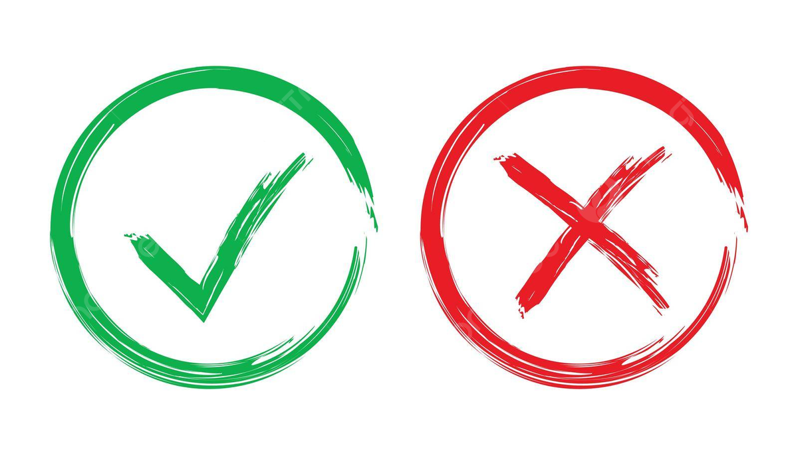

Nuestras Posturas
quienes defienden la Teoría Crítica, piensan que la tecnología no puede analizarse como un elemento aislado, sino como un ejercicio de poder. Esta visión nos exige ir más allá de la pregunta funcional "¿para qué sirve?", para cuestionar profundamente quién diseña, con qué intereses, a quién excluye y cómo se financia. Desde esta perspectiva, como diseñadores, asumimos la responsabilidad ética de cuestionar nuestros propios sesgos y reconocer que el diseño es, en sí mismo, un acto político que configura la realidad.
Teoría Crítica
Con respecto al uso, evolución e impacto de la tecnología, nuestro grupo identificó dos posturas principales que surgen en torno al carácter de la tecnología: mientras una postura sostiene que esta incorpora valores desde su diseño y desarrollo, la otra la entiende como una herramienta esencialmente neutra.
Instrumentalista y Determinista
Los que abrazan la postura instrumentalista señalan a la tecnología como una herramienta esencialmente neutra. Bajo este prisma, el objeto tecnológico no posee valores intrínsecos; su carácter (benéfico o perjudicial) depende exclusivamente de la voluntad y la ética de quien la emplea. Para nosotros, la tecnología es un medio potente cuyo impacto final está sujeto a la decisión humana, lo que coloca el foco en la capacitación y el criterio de los usuarios y desarrolladores más que en la estructura del diseño per se. Es por este último punto que como grupo rechazamos la visión determinista, ya que las tecnologías no pueden producir cambios de manera autónoma, si no que su efectividad e impacto dependerán de quienes la utilicen y bajo qué contexto.

Sustantivismo
Reconocemos el aporte de entender que la tecnología influye en las prácticas sociales y puede moldear ciertos comportamientos. Sin embargo, coincidimos en cuestionar la tendencia de esta postura a presentar el avance tecnológico como una fuerza que se impone sobre la sociedad, ya que ello puede reducir la percepción de que las personas tienen la capacidad de intervenir, orientar o transformar el desarrollo tecnológico.
Reflexión General
A pesar de estos matices, el grupo logra un consenso al empatizar con las narrativas de nuestros entrevistados. Compartimos con la mayoría de los jóvenes la convicción de que la tecnología posee un potencial real para transformar la sociedad y resolver problemas urgentes como la pobreza o el cambio climático. No obstante, al analizar cómo hoy esta herramienta está capturada por intereses privados y grandes poderes, surge un sentimiento de resignación que ambos bandos reconocemos: la sensación de que, al estar el control en manos de terceros, el margen de acción individual se siente limitado. Este diagnóstico común nos desafía, como futuros diseñadores, a cerrar la brecha entre el potencial transformador de la herramienta y la necesidad de ejercer una soberanía humana más consciente sobre ella.